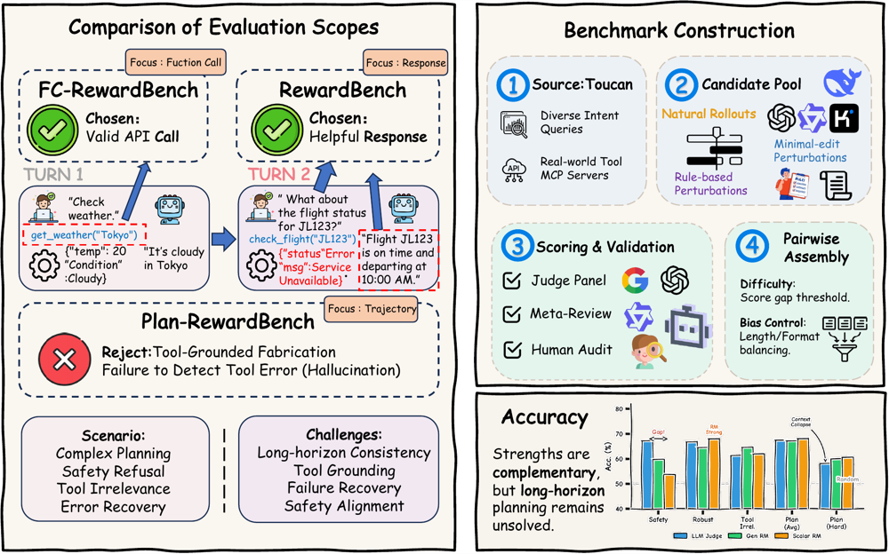

🚀
Research Interests
OPD and Self-OPD
OPD learns on the student's own trajectory distribution using
teacher-derived token-level supervision. For Self-OPD, I focus on
self-generated supervision, such as reference-answer privileged
teachers, correct answers from the student's own rollouts, and
follow-up stabilization methods.
Reinforcement Learning
Improving agentic RL, especially tool use, planning, and reasoning
abilities in general-purpose reinforcement learning models.
Reward Modeling
Exploring efficient rubrics from real-world data and
designing dense reward mechanisms for fine-grained
supervision.
Outside research, I enjoy expressing emotions through piano. I received
an Excellent rating in the Level-10 piano examination.
📚
Publications

ACL'26 main, CCF-A
Aligning Agents via Planning: A Benchmark for Trajectory-Level Reward
Modeling
Jiaxuan Wang , Yulan Hu, Wenjin Yang, Zheng Pan, Xin
Li, Lan-Zhe Guo
Technical Report
AMAP Agentic Planning Technical Report
AMAP Team
Participated in reward model design and follow-up agentic RL
optimization.
In Preparation
Self-OPD
Jiaxuan Wang
Ongoing work on Self-OPD.
💼
Internship Experience
2025.10 - Present
Research Intern, Amap, Alibaba Group
LLM Foundation Model Team, Amap.
🏆
Awards
2025 Outstanding Graduate2024.11 National Scholarship
2024.02 Special Scholarship for Outstanding Students (top 1%)